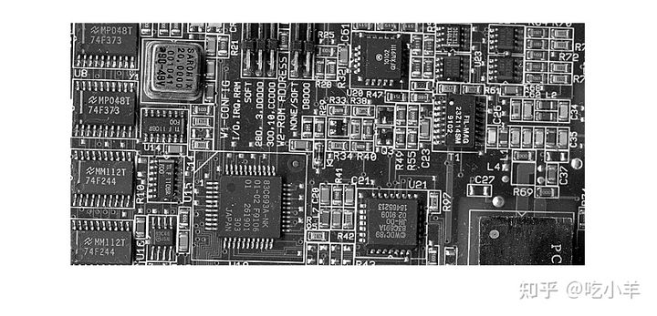
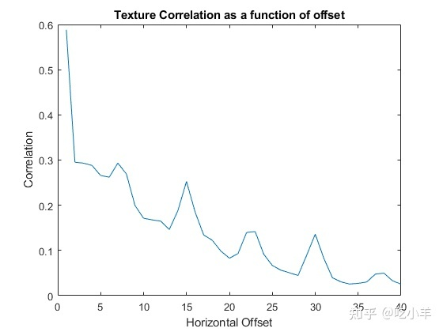

Home
本示例显示如何创建一组 GLCM 并从中获取统计信息。该示例还说明了 graycoprops 返回的统计数据如何与原始输入图像有直接关系。
将图像读入工作区并显示。该示例将真彩色图像转换为灰度图像，然后在本示例中将其旋转 90 度。
circuitBoard = rot90(rgb2gray(imread('board.tif')));
imshow(circuitBoard)

定义不同方向和距离的偏移。由于图像包含在水平和垂直方向排列的各种形状和大小的物体，因此该示例指定了一组仅在距离上不同的水平偏移量。
offsets0 = [zeros(40,1) (1:40)'];
创建 GLCM。调用graycomatrix函数，指定偏移量。
glcms = graycomatrix(circuitBoard,'Offset',offsets0);
使用graycoprops函数从 GLCM 导出统计数据。该示例计算对比度和相关性。
stats = graycoprops(glcms,'Contrast Correlation');
将相关性绘制为偏移量的函数。
figure, plot([stats.Correlation]);
title('Texture Correlation as a function of offset');
xlabel('Horizontal Offset')
ylabel('Correlation')

该图包含偏移量 7、15、23 和 30 处的峰值。如果仔细检查输入图像，您会发现图像中的某些垂直元素具有每七个像素重复一次的周期性图案。
======================================================================
我的测试结果及程序
下面是我测试的代码：

注：本文根据MATLAB官网内容修改而成。